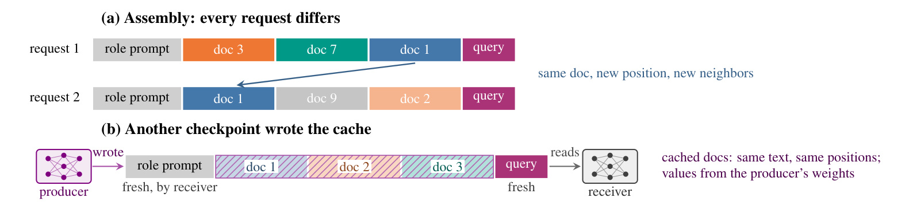
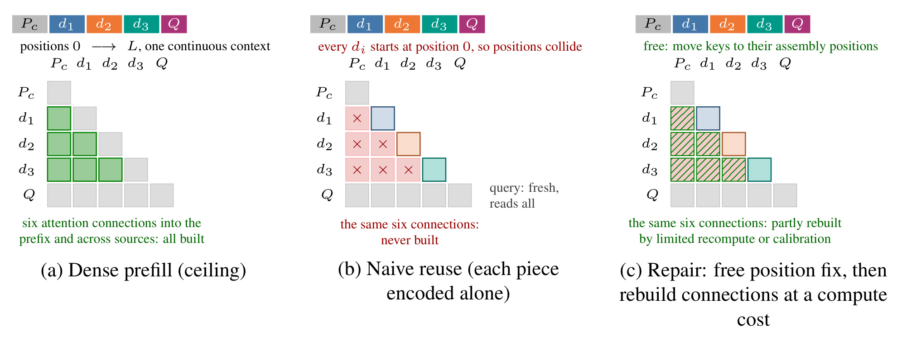
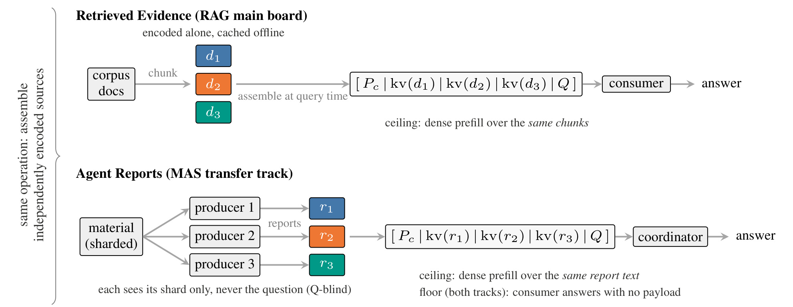
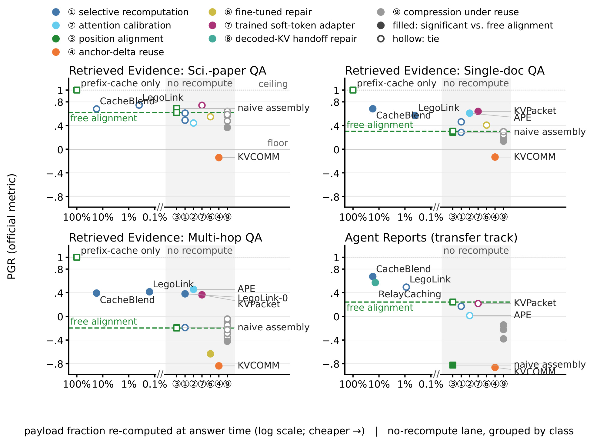
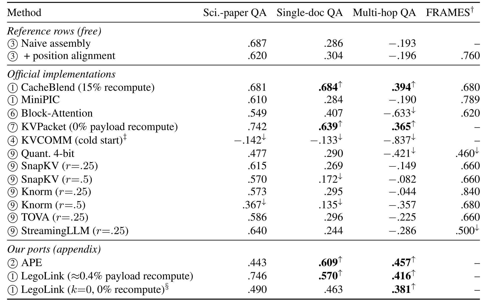
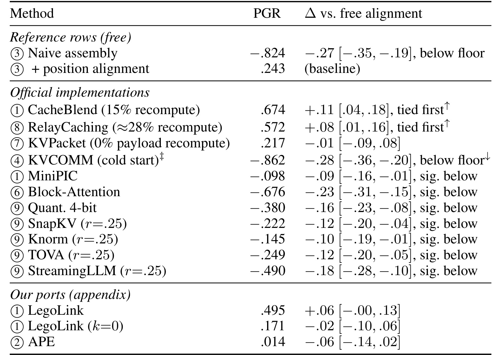
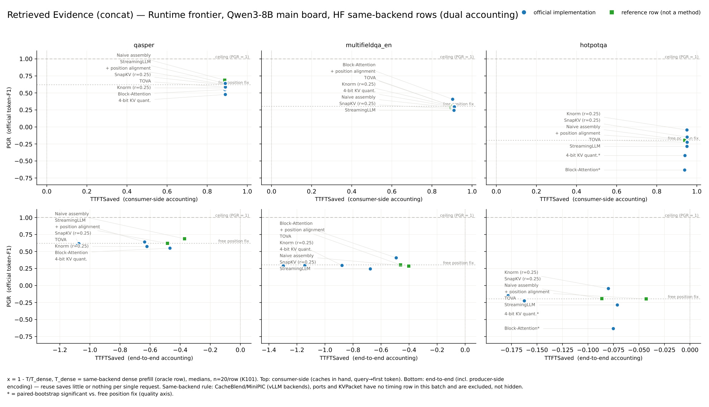
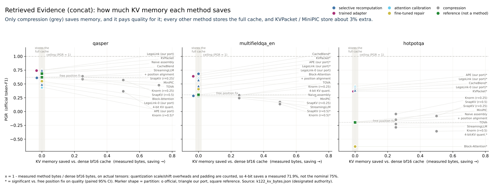
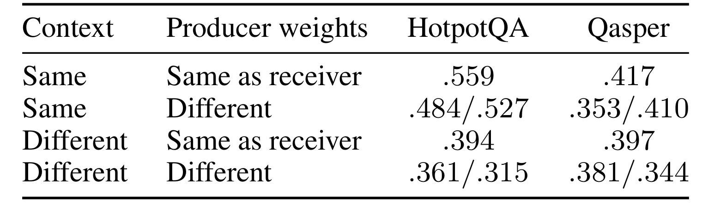
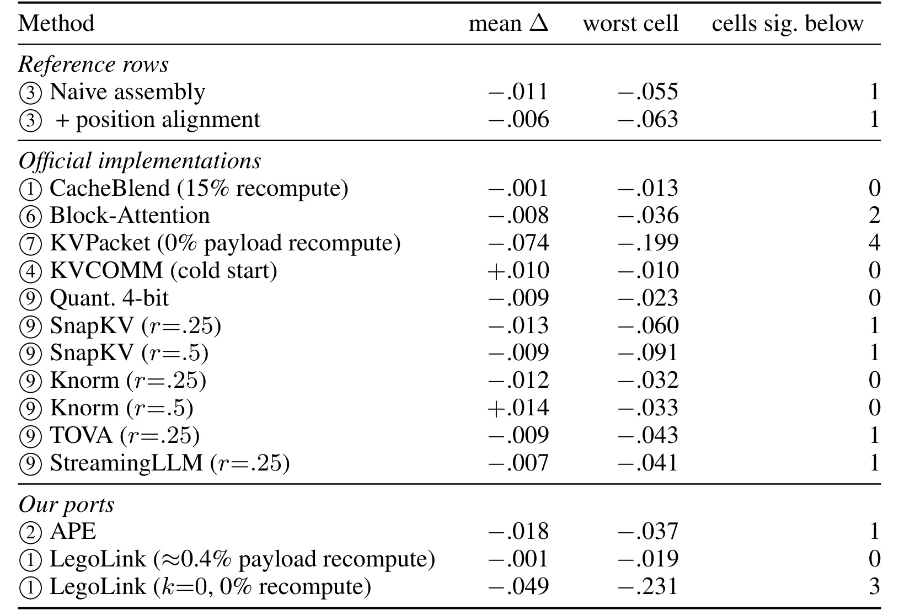

KVShareArena：跨上下文、跨模型检查点的 KV 缓存复用如何公平评测
KVShareArena: KV-Cache Reuse Across Contexts and Model Checkpoints 由中佛罗里达大学（University of Central Florida）的 Xi Shi、Qian Lou 提出，第一作者为 Xi Shi。论文于 2026-09-09 首次公开，本笔记依据 arXiv v1 阅读，精读日期为 2026-09-11。论文入口：arXiv:2609.10266。
这项工作为检索片段和智能体报告的缓存复用建立统一测量协议，重点区分位置错位、来源之间缺少交互以及生产模型权重变化的影响。代码状态仍需保留边界：正文有 [repo link]、榜单及数据占位文字，独立 harness、可安装包和公开榜单本轮未核验。PDF 页眉写的是 ICLR 2027 审稿中，不能据此认定录用。
把独立编码的缓存拼进新提示词时，缓存中的位置已经改变，来源之间需要的注意力也从未建立；即使来自相同架构，另一个检查点写出的缓存仍可能具有不同的数值表示。
1. 背景和问题
KVShareArena 的研究对象，是一个看起来顺理成章、实际包含多重假设的系统动作：文本以前已经经过大模型，既然对应的键值状态还在，后续请求能否直接读取它们，省去再做一次预填充？对于严格前缀缓存，答案较为清楚：当前请求在命中位置之前的所有 token 必须与历史请求完全一致。在这种限制下，缓存仍待在自己出生的上下文里，重用不会改变它原来计算的语义。对于检索增强生成与多智能体协作，限制常常不成立。每个问题召回不同的段落集合，排序也不同；协调者接到的报告可能由不同生产者刚刚生成，无法等待下一次完全相同的请求。
论文把被共享的主体材料叫作 payload，并特意把它与系统指令、角色前缀和当前问题分开。这个术语划分决定了成本账本：要省的是同一批材料再次进入接收者时的预填充工作；问题本身依然需要计算，角色前缀可能仍可以命中现有缓存。假如只看整个请求中是否存在任何缓存命中，就会把静态指令的一点命中与长材料的真正复用混为一谈。作者关心的是后者，因为长材料重复编码可能构成主要开销，而常规前缀机制无法把从别的位置搬来的一个文档块自动识别为可无损使用的历史状态。

Figure 1 上半部分展示的是检索结果重组：第一次请求读取文档三、七、一，第二次读取文档一、九、二。同一篇文档一的内容没有变化，但前面出现过哪些文档以及它所在的位置都改变了。因此，内容去重并不等于注意力状态可以原封不动重用。下半部分把材料和位置保持不变，只替换写入缓存的生产模型；角色提示和问题仍由接收模型现算，材料内部的键值却来自生产者的权重。这是第二种独立变化，即表示兼容性问题。图中用斜线区分外来缓存，意在提醒读者“张量能接上”只是接口条件，不能推导“模型读得懂”。同一架构、相同分词器保证了维度与 token 序列大体一致，无法保证线性投影、层间表征和注意力读出仍互相匹配。两部分合在一起，才是本文最困难的单元格：材料在新的上下文中组装，同时其状态来自不同检查点。
位置问题和信息问题需要拆开。对于使用旋转位置编码的模型，把键从旧位置变换到新位置通常比重新编码全部材料便宜得多；这可以被当作免费或近似免费的参照修复。但单独编码文档二时，它并没有读到文档一中的实体指代、前提与限定条件。后来再把两块键值放进同一个数组，只是让当前问题可以读取两块孤立的状态，并不会倒过来补做文档二对文档一的注意力。因此，当前位置正确仍可能缺少跨来源推理所需要的信息交互。论文将后者称为来源彼此不可见，或 mutual blindness。它不是文件是否可见的权限概念，而是状态形成时缺少交互计算的事实。
这也解释了为什么一个只测严格前缀缓存的基准不足以评估此类方法。前缀完全一致时，错位损失按构造就是零，实验无法区分几何修复和信息修复；一个只测试跨模型但始终固定上下文的工作，则看不到这两种损伤共同出现时会发生什么。作者整理的既有研究分散于检索服务、智能体协作和潜在表示通信几个方向。它们可能各自选取不同的数据集、上界、推理后端和节省口径，使得“复用率更高”“接近完整重算”“首 token 更快”都成立，却不能相互比较。KVShareArena 的新增贡献主要在测量协议和受控比较，而非提出一个统一修复所有缓存的新网络。
只报告相对于完整重算的损失，还有一个容易漏掉的参照点：接收模型完全不读这些材料时能答成什么样。若模型本来就知道答案，完整材料带来的净收益可能很少，这时方法略低于完整重算不意味着它真的保住了多少有效信息。反过来，错乱的缓存可能把接收者引向错误实体，表现甚至不如直接忽略材料。一个看上去只是“比完整重算低一些”的结果，实际可能落到了无材料基线之下。论文引入两个固定锚点，就是为了把这类负贡献显性化；最终读者应关注恢复了材料净价值的多少，而不只是把最终准确程度孤立地拿出来排序。
还有一个问题来自成本的“免费”说法。零 payload 重算不等于零训练成本，也不等于零 KV 显存，更不等于请求端到端没有成本。训练一个软 token 适配器，可能把修复支出提前到离线阶段；保留所有缓存但少做计算，可能几乎不节省显存；用已有缓存进行一次请求很快，也可能因为创建缓存昂贵、只读取一次而无法回本。本文把这些情况放到不同资源维度，核心目的是避免某种方法在自己擅长的口径上赢得一个无法复核的总冠军。阅读时需要一直保留这一边界，否则会把“哪个修复家族在何种任务中有价值”的论文，误读成“哪个方法在任何部署条件下都最快”。
因此，这篇论文值得精读的重点有三个层次：先识别任务是否真的需要来源之间的依赖，再测量位置修复之后还有多少可恢复空间，最后根据实际瓶颈选择计算、显存或延迟的权衡点。跨检查点则提供了另一层压力测试：一个在固定生产模型上工作良好的方案，是否只是拟合了这个模型的缓存分布。本文给出的反例提醒我们，接收者仍能流畅输出时，复用也可能已经失效。它所提供的不是普适可靠性保证，而是一套能把这些失效逐层暴露出来的评估设计。
2. 方法
2.1 独立编码与双因素控制
协议首先把每个来源块放在统一、隔离的出生上下文中编码：从位置零开始，不掺入生产者特有的角色前缀，也不让缓存构建函数看到当前问题。问题到来后，接收者将自己的前缀、若干已缓存材料和问题按顺序拼接。块优先采用数据原有的自然段边界，否则使用五百一十二 token 的窗口。输入是原始来源文本、指定生产检查点及固定分块规则；输出是可以单独保存的 KV 对象。消费阶段的输入则是这些缓存、接收者前缀和问题，输出答案以及逐样本开销。这样的接口把缓存何时形成、由谁形成与谁负责回答分开，也让同一块材料能够被多次组合。
两个实验因素分别是使用上下文是否等于出生上下文，以及生产者权重是否等于接收者权重。接收者、架构、分词器、文本、样本和评分保持固定。于是有严格前缀控制、只换检查点、只换上下文、两者都换四格。全修复方法阵容主要跑两个上下文已变化的格子，同上下文格子作为控制。不能把“换了生产者”同时“换了接收者”的差异归因于缓存兼容性，因此这一固定接收者的设计非常关键。它也限定了外推范围：不同架构、不同分词器和不同 RoPE 基底的转移没有得到保证。

Figure 4 是理解整个基准的机制图。横向是被读取的块，纵向是发出注意力查询的块，左侧密集预填充建立了材料对前缀、后一个材料对前面材料的六组连接。中间把各块单独编码后拼接，彩色对角块内的计算还在，红色叉号对应的跨块连接却从未产生；最下方问题行仍是新计算的，它能读取全部缓存，但读到的是彼此隔离形成的状态。右侧先把位置摆正，再通过局部重算或者其他修复机制补回一部分关联，斜线区域表示修复付出的额外代价。这里不能把图理解为所有方法都真的重新计算了同样六块稠密注意力。不同方法改变的是选择哪些 token 重算、如何校准注意力或如何学习补偿表示，图展示的是它们要解决的共同缺口。它说明了输入输出之间的不可逆信息差：一个后来的坐标变换可以改变已存在键的几何位置，无法生成原本没有经过注意力混合的隐状态。因此，用“修好位置后仍剩多少差距”定义有效研究空间，直接对应这张图中从叉号到斜线的变化，而不是把任意缓存压缩损失都算到上下文修复头上。
训练与推理在方法阵容中分工不同。CacheBlend、LegoLink 等将部分支出放在回答阶段，通过选择性重编码重建接收者状态；KVPacket 则通过训练软 token 适配器，在零材料重算端点提供补偿；Block-Attention 按官方配方训练模型；APE 采用注意力校准。它们并没有一个共同训练目标可供本文重新推导，KVShareArena 也不把这些方法改造成自己的网络。评估应保留各方法本来的训练来源、实现分区和遥测，再检查其输出是否满足统一接口。论文记录 Block-Attention 自训练用了 8.2 GPU 小时，但这不是所有训练型修复的统一预算。
2.2 两条 track 及同 payload 质量锚点
Retrieved Evidence 轨道使用离线缓存的原始检索片段，Agent Reports 轨道使用生产智能体写出的报告。报告生产者只读自己分到的材料，不知道问题；报告一次生成后冻结，每种方法消费逐字节相同的文本。这使报告构建接近问题尚未出现时先准备材料的场景，也防止某种方法额外获得答案提示。报告轨道的上界是接收者完整重算同一份报告，不能偷换成让它读取原始文档。因为从文档转成报告已经可能损失信息，把两种输入混用会把生产流水线的质量差异算进缓存修复损失。

Figure 7 把同一操作落实成两条数据路径。上半部分由语料切出多个文档块，独立编码后在查询时组装；下半部分先把原始材料分给多个生产智能体，再把其报告编码并交给协调者。图中两条路径共用“组装独立编码来源”的结构，但蓝色文档块与绿色报告块并非同一种信息载体。上界的斜体强调 same chunks 与 same report text，正是要固定方法实际拿到的材料。下方生产者旁边的问句盲约束尤其重要：如果报告在看到问题后才生成，生产者可能已经完成一部分推理和筛选，届时报告缓存更有效不能归功于接收端修复。图中无材料下界则由接收者在不读任何共享材料时得到，用来测量 payload 的净贡献。两个轨道即便归一化后都写成零到一附近的数字，其分母也指向不同的信息对象，因此不能相加后平均成一个总体能力值。真实系统中，报告生成时可能已持有解码阶段缓存，使构建成本成为沉没成本；本基准为了统一输入，仍对每行采用同样的隔离编码过程。二者的区别应在部署账本中显式处理，不能从示意图里省略过去。
质量指标是 performance-gap recovered，记为 PGR。令方法的官方任务分数为 $S_m$，不读材料为 $S_f$，完整重算相同材料为 $S_c$，则原文公式一为：
符号解释：$S_m$、$S_f$、$S_c$ 分别是当前方法、无材料与完整重算的任务分数。分子是方法相比忽略材料多保留了多少收益，分母是这批材料通过完整重算能提供的总收益。PGR 等于零意味着材料没有贡献，等于一意味着达到了该上界的分数，小于零意味着有害，超过一也允许出现。这里的上界是固定比较锚点，并非数学上不可超越的最优解。举例说，当净材料价值只有零点三时，原始任务分数增加零点零三，对应恢复份额增加零点一，而不是任务准确率提高百分之十。论文的三个 LongBench 主子集净价值依次为 0.395、0.329、0.308；不同模型榜重新冻结自己的锚点，所以跨榜不作数值排名。
2.3 三条资源前沿与显式汇总分
计算节省按实际重算的层与 token 联合计量。设 $R$ 为方法重新计算的材料层-token 数，$D$ 为完整材料稠密预填充对应总数；显存以实际张量字节为准，设 $B_m$ 与 $B_d$ 分别为方法与 BF16 稠密缓存字节；延迟使用同一后端的 $T_m$ 与 $T_d$。三个定义为：
每个分子分母都从样本原始累计量得来，不将“配置重算百分之十五”当作真实计算占比，也不将“四位相对十六位”当作真实显存节省。量化的尺度、位移、索引、副本和补齐都要进入字节账本。延迟测量则假定请求开始时缓存已经在手，衡量方法可直接控制的消费成本；它只在同后端具有稠密参照时有定义，缺测记为空，不能用另一个引擎上的时间补齐。
一次构建缓存的 $T_{\mathrm{build}}$ 独立报告。原文给出在带宽和复用次数由部署方提供时的回本读次数：
这个表达式假设每次读取的传输成本近似为字节除以带宽，且分母为正；若接收端省下的时间还不够搬运缓存，就不存在该简化模型下的正回本次数。实际调度可能重叠传输与计算，不能把此式当作已经测出的线上加速。这一设计允许一个方案在计算图上很有吸引力、却因全缓存搬运在部署上不合适，也允许高频热点材料摊薄构建成本后变得有价值。三条 Pareto 前沿因此应保留，不宜只展示一个综合分。
若确实需要按用户偏好排序，论文先将 PGR 截断为 $A\in[0,1]$，把指定资源轴的节省按权重汇总为 $C$，再定义：
默认 $\beta=0.1$，计算与显存等权，偏重质量。附录还给出均衡、计算受限、显存受限和延迟受限的预设。这个分数中的截断只服务汇总排序，不能回头把主表中的负 PGR 隐藏掉。附录对需要却未测量的轴显示横线，尤其延迟预设仅覆盖八行，说明“可比行集合”也随预设变化。汇总分能够表达选择偏好，却不能替代物理量本身，更不应跨官方实现、移植与参考分区制造统一冠军。
2.4 准入、官方计分与实现保真门
作者在正式运行方法前要求材料确实有用，且免费位置修复后仍有值得测量的残差。设 $\Delta=S_c-S_f$、免费对齐分数为 $S_{\mathrm{free}}$，准入条件包括：
并要求残差置信区间排除零、配对检验支持其显著性。第一项避免分母太小导致 PGR 不稳定，第二项避免把已被免费操作解决的任务当作付费修复竞技场，第三项避免抽样噪声制造虚假研究空间。未通过准入的候选仍然公开其结果，不能悄悄消失。只有格式满足不够，交互较轻的摘要任务也可能因为几乎没有残差而被拒绝。数据集、材料长度上限、样本与锚点在方法运行前冻结；对共享设定不适用的方法写不适用，不给它另开有利设定再混排。
三个 LongBench 子集采用官方 token F1，FRAMES 变体采用该数据集自带的模型评审协议，并以其他模型家族交叉核验评分。方法条目分成官方实现、作者移植、参考基线三类。APE 移植在同引擎四种材料设定上与官方分数相差不超过正负 0.01，通过分数门；LegoLink 跨引擎的分数门失败，进一步追踪一百个样本发现协议决策一致，改以组件机制等价门准入，同时保留失败记录。这不是可忽略的脚注：其结果可以支持该机制有用，但不能把移植行伪装成官方代码的同条件排名。作者还报告修复了官方服务栈中分隔符与 RoPE 缩放两处问题，提醒复用是否真的触发也需要验证。
3. 实验结果
3.1 主榜与任务交互
主模型是 Qwen3-8B；第二个八十亿参数家族 Llama-3.1-8B-Instruct 和一个四十亿参数同族模型用于确认模式。主检索轨道包含 Qasper 科研论文问答、MultiFieldQA 单文档问答、HotpotQA 多跳问答三个 LongBench 子集，每个冻结一百个样本，并额外加入 FRAMES 问题配合固定二〇二六年维基快照的变体。二十九 K 输入上限选择为不截断冻结样本；时间、材料版本、问题集合均须在复现实验时保留。图中的比较对象是免费位置对齐，显著性采用配对自助采样的百分之九十五置信区间，不能只凭点估计高一点就称胜出。

Figure 3 横轴左侧是回答时真实重算的材料份额，采用对数刻度，越往右越省；最右侧另设零重算区域，因为零无法放入对数轴。纵轴是各自官方指标归一化后的 PGR，零线代表无材料回答，一线代表完整重算同一材料。绿色虚线是免费位置对齐，实心标记表示相对该基线有显著差异，空心表示当前样本量不足以区分；颜色按修复机制而不是按优劣编码。科研论文面板没有一个付费方案显著超过免费对齐，单文档和多跳面板则出现局部重算、注意力校准、训练适配器带来的恢复空间。报告面板进一步收紧，有可靠显著收益的只剩重算类修复。一个尤其重要的读图细节是，多跳免费对齐本身在零线以下：此时“比朴素拼接好一些”仍可能无意义，必须至少证明正在恢复材料净收益。另一个细节是最右边聚集了多种机制，零重算只是在线计算标签，里面的训练适配器和无需训练的压缩并不拥有相同的离线成本。四个面板放在一张图上是为了比较形状与适用条件；它们不能合成一组跨轨道的全局坐标来排序。
这张图还揭示了一个选择基线的原则：方形前缀缓存参照点位于完整质量、完整材料计算的位置，因为独立材料无法命中完整前缀；它不应与修复方法争夺名次，而是说明这些方法试图离开的起点。假如把静态角色提示命中的节省也算成材料节省，起点就会被错误右移，修复价值随之被低估。相反，只拿最便宜的零重算方法与完整重算比较，也会跳过绿色虚线这个更强的免费基线，从而把位置调整本就能得到的收益算成新方法贡献。因此读者需要同时看零线、一线与虚线，分别回答材料有没有帮助、距离完整重算多远、是否真正超过免费操作。

Table 2 给出了读图所需的完整精确值。先看三个免费对齐值 0.620、0.304、−0.196；这已经足以否定“只要把位置搬正，各种材料复用就安全”的解释。CacheBlend 三列是 0.681、0.684、0.394，后两列显著高于对齐；KVPacket 是 0.742、0.639、0.365，同样在后两列显著获益。移植分区的 APE 为 0.443、0.609、0.457，LegoLink 为 0.746、0.570、0.416。可以据此说多个机制族都能补回某些多来源交互损失，但不能把不同分区的数值混成官方实现总排名。科研问答上 LegoLink 或 KVPacket 的点估计较高，没有显著性箭头；“无方法显著超过对齐”也不等于对齐已经恢复百分之百，原表实际上仅为 0.620。作者主文的“接近解决”概括比这一具体数字更强，精读应以表格限定其含义：在当前分辨率下，尚未证明付费方案多出来的收益可靠。
多跳列更清楚地说明恢复比例与准确率的区别。免费对齐的 −0.196 表示它损失的不仅是材料潜在收益，还反过来低于无材料回答；付费方案把它拉回约 0.36 至 0.46 的净价值恢复区间。用已给定的净价值 0.308 计算，CacheBlend 相比对齐的 PGR 差为 0.590，映射为原始 F1 增加约 0.182，而不是准确率提高五十九个百分点。这样的换算只能在该榜、该子集同一锚点内进行。单文档名字也容易误导：一个原始文档被切成多个独立缓存块，问题仍可能需要跨块联合读取，所以单文档并不意味着单来源独立编码控制。
压缩行没有任何一个子集显著超过免费对齐。四位量化在多跳为 −0.421，Block-Attention 为 −0.633；这些行的失败不能被零重算掩盖。FRAMES 变体的对齐值为 0.760，Knorm 某配置达到 0.840 的点估计，但没有显著超过对齐，因此应写持平证据不足，而不是宣布压缩获胜。该变体每问只有二至四个来源，作者将其看作来源盲区较轻的样本外检验。它使用快照重建材料而非原始数据发布时的全文，且不是每种方法都进入这一波实验，横线不代表零分。标题“主榜”应始终附带这些材料与覆盖边界。
论文还有一组支持机制解释的诊断：把报告分给更多彼此不见面的生产者时，归因于来源盲区的损失比例随分割数增加，完整分割达到 0.76，区间为 [0.46,1.19]。这是一条经验剂量关系，不是普适理论定律；区间较宽也不应写成精确因果常数。与之呼应，使用同样重算预算却随机挑 token，会在损伤严重的场景中失去大部分收益，说明选择哪些状态重建比单纯花多少计算更重要。对一个新的缓存修复方案，合理问题因而是它能否识别被组装改变的关键信息，而非仅检查配置的重算比是否比已有方法更低。
3.2 Agent Reports 与评分敏感性

Table 3 中免费对齐为 0.243，朴素拼接为 −0.824，冷启动 KVCOMM 为 −0.862。报告错位的损伤远大于“少保留一点上下文”，在这组数据上不读材料反而更好。CacheBlend 达到 0.674，RelayCaching 达到 0.572，两者相对免费对齐都有显著收益，彼此统计上并列领先。这里最容易读错的是最后一列：CacheBlend 的 +0.11、RelayCaching 的 +0.08 是原始官方分数的配对差与置信区间，不是 PGR 分别增加 0.11 与 0.08。PGR 差应由中列相减，分别为 0.431 与 0.329；把最后一列的区间拿去配上 PGR 单位会破坏整份统计解释。LegoLink 的 PGR 0.495 看起来高于 0.243，但原始差为 +0.06，区间 [−0.00,0.13] 触及零，不能列为已证实的赢家。KVPacket 在这里仅 0.217，迁移了方法却没有迁移检索证据轨道上的收益。两种高分重算方法仍剩下相当部分上界差距，本文并没有表明报告复用质量问题已经解决。
各压缩行相对免费对齐都显著下降。四位量化为 −0.380，SnapKV 一种配置为 −0.222，TOVA 为 −0.249，StreamingLLM 为 −0.490。作者的解释是新报告通常比原文紧凑，缺少可随意删去的冗余；出生时重要的 token 也不保证在新组合中仍是关键。附录用同一压缩器、同一批材料、两种上下文检验这一交互：SnapKV 的 r=0.5 配置在严格前缀中三列 PGR 是 0.772、0.691、0.817，组装后变成 0.570、0.172、−0.082。不能从单提示词上的温和压缩损失推导跨来源重用同样温和。这里 r 按原文配置名保留，不自行把它解释为所有实现统一的删除率。
报告压缩的另一种解释是回答更容易被长度上限截断。作者把输出 token 上限从三十二提高到一百二十八，同样样本中触顶数量由每百条十六至十七条降到一至三条，但分数变化至多 0.003且不显著，与对齐的差距也没有缩小。这个控制比仅凭输出看起来短更有说服力，支持问题来自 KV 信息内容，而不是回答预算。Block-Attention 则还有冗长答案被词级 F1 惩罚的成分，不能把所有低分行都用同一个压缩损失解释。KVCOMM 的条目也必须写冷启动：冻结一次性来源使锚点记忆无法触发；作者另有重复消息场景的伴随实验，但它改变复用分布，不该拿来覆盖当前表中的冷启动表现。
评分工具本身会改变个别名次。附录 Tables 4、5 在相同输出上加入模型评审伴随分数，科研问答中四位量化在评审下排得更高，Block-Attention 多跳也不再像 token F1 那样垫底。一方面，词级 F1 会惩罚冗长但正确的回答；另一方面，二值模型判断会让短回答的大量配对打平，报告轨道中约百分之四十六至七十的配对出现平局，导致官方指标下两位赢家的显著性在伴随评审中消失。作者做过盲重复评审、改写评分提示和跨模型核验，说明评分器并非随意设置；但这仍不意味着任一种评分是绝对真值。稳妥结论是保留官方指标作为主榜、把不同工具下的冲突明确列出，尤其不能用评审 PGR 去替换主文的 token F1 PGR 再拼成一个更好看的结果。
3.3 计算、延迟与显存分别看
计算轴上，多数方法不重算材料，只有少数付费方法拉开明显预算差异。CacheBlend 条目名称保留配置的百分之十五，正文按实际累计层-token 报告约百分之十七；LegoLink 的测量占比低于百分之零点五。两者差异说明名义比例与真实成本必须分开记录。KVPacket 则在零材料重算端点恢复了部分检索质量，但训练适配器和保存全缓存的成本不会因此消失。部署者若先按计算前沿筛选，再确认是否有同后端延迟实测，所得候选集合很可能小于整张质量榜。

Figure 5 上排的消费端测量中，各复用行相对完整稠密预填充约节省百分之九十首 token 时间，主要因为长材料预填充已经提前完成，而剩余操作接近常量。下排将一次生产端隔离编码成本加回来，很多点的节省变为负，显示只用一次缓存可能比直接重算更慢。两排同时存在，说明“请求时缓存已到手”的优势与“整个系统端到端省时”的结论并不相同。横轴定义为一减时间比，负值就是比同后端稠密参照更慢；它不代表负延迟。纵轴仍是相同输出的 PGR，图中显著性标记也是质量轴而非延迟差的置信判断。该实验每行只测二十个样本，使用中位数，并只纳入共享 Hugging Face 后端的行；CacheBlend、MiniPIC、若干移植与 KVPacket 缺少这一批同后端计时，不是隐藏了慢结果，也不是可从其他行估算。原图还保留了 draft 标记，精读只能把这些数值作为论文报告的受限实验。把下排当作所有部署的最终速度同样不合理，因为读多少次、缓存存在哪一层、传输能否重叠，都是这里没有统一指定的工作负载参数。
上下排之间发生的水平移动还提示，缓存构建是否能够被多次读取，是延迟核算的独立变量。若请求只消费一次刚生成的材料，完整构建开销不能凭空消失；若热点材料被重复检索，则每次请求只负担一部分构建成本，横坐标会随复用次数变化。图中没有画这个连续过程，也没有给出缓存命中流的概率分布，因此不能在两排之间直接挑一个中间值作为线上结果。传输开销也可能因缓存驻留位置而变化：图中缓存已经在手的时间省去了这一层差异，计算回本次数时必须重新补上。原文引用其他服务系统的实测只说明这些部署变量确实重要，不能替代该图缺少的方法自身端到端测量。

Figure 6 的横轴是相对稠密 BF16 缓存测出的字节节省，越往右越省显存。几乎所有恢复质量的修复方法都聚集在零附近，部分还略小于零：KVPacket 额外软 token 和 MiniPIC 补齐各增加约百分之三字节。真正往右移动的是压缩家族，但它们付出的质量损失在多跳面板尤其明显。四位量化测得节省百分之七十一点九，而不是按位宽直接推算的百分之七十五，因为分组缩放与位移等元数据也要存储。这个差异不大，却能检验成本定义是否兑现到张量级别。图中的圆、三角与方形还分别提示官方实现、移植和参考分区；不同分区的点放到同一物理坐标系是为了认识机制，仍不意味着可以忽略实现差异给出统一排名。三幅子图维持各自任务的质量分母，显示同一字节预算在不同任务中可能保留完全不同的有效信息。若服务瓶颈是显存而非算力，这张图会把决策转向压缩与较低质量之间的可接受权衡，不能拿计算轴上的零重算替代这一选择。
附录 Table 9 将这种权衡用五种偏好预设展示。默认偏质量时，官方分区 KVPacket 的汇总分 0.569、CacheBlend 为 0.561；改成均衡预设后为 0.527 与 0.478。它们接近与否只反映人为设置的质量和资源兑换率，而非新的显著性结论。显存受限预设下，全缓存方法按构造得零，压缩方法才有收益；延迟受限预设仅对有测量的行给分。Agent Reports 列只使用计算轴，不能和检索列的计算加显存分数混排。相比争论哪一个预设最正确，更实用的做法是保留预算约束，先排除达不到最低质量或显存上限的点，再在剩余可比行里看代价。
3.4 跨 checkpoint 与稳健性

Table 7 使用的是原始官方 F1，不能与前面 PGR 表直接相减。HotpotQA 测四十个样本，Qasper 测二十个；不同权重一格里的两个值依次对应基础前身和进一步训练的生产者。同上下文同权重时 HotpotQA 为 0.559，只换生产权重为 0.484/0.527，只换上下文为 0.394，两者同时换为 0.361/0.315。Qasper 相应为 0.417、0.353/0.410、0.397、0.381/0.344。两因素同时变化造成的损失明显依赖任务和生产者，没有一个固定折扣可以通用。Qasper 上同上下文的进一步训练生产者与接收者差距很小，但在换上下文后差距扩大，说明上下文与表征兼容性的交互不能仅靠一个同前缀测试排除。这些小样本控制格的用途是确认因素确实被分开操纵，而不是估计所有模型更新的平均损失。表中接收者从未变化，角色前缀和问题仍由其计算，所以观察到的变化更直接指向外来材料状态。
逐格计算可以更清楚地区分两种效应。HotpotQA 同上下文时，基础前身与进一步训练生产者相对同权重接收者分别下降 0.075、0.032；上下文改变后，它们相对同权重的组装控制分别下降 0.033、0.079。生产者谁更难兼容的次序因此发生反转，不能仅把两个孤立损失相加来预测最困难格子。Qasper 的进一步训练生产者在同上下文仅下降 0.007，换上下文后却下降 0.053，也显示仅检查严格前缀交接可能漏掉组装后的风险。这些差值均由表中原始 F1 点估计相减得到，单位是 F1 分数，不是恢复比例；表内没有给出这些新差值的配对置信区间，不能把次序反转直接宣称为已显著的交互效应。该表测的还是直接复用，不能据此判断修复算法无效；下一张表才在相同生产者变化下检验整套修复方法。因此它承担的是因素分离与提出机制假设的作用，而不是替代修复效果主榜。
作者还以键投影的权重距离解释生产者差异：进一步训练的同族生产者距离为 0.136，基础前身为 0.090，前者在多跳场景更难兼容。谱系名称因此不等于表示距离，不能认为同属一个家族就必然比基础检查点更接近接收者。这只是当前两种生产者上的解释线索，尚不足以构成可预测任意检查点兼容性的阈值。

Table 8 对三个子集乘两个外来生产者的六个格子汇总变化，列出平均、最差单格与显著下降数量。CacheBlend 平均变化 −0.001、最差 −0.013，显著下降零格；带重算的 LegoLink 为 −0.001、−0.019、零格。KVPacket 则为 −0.074、−0.199、四格，零重算 LegoLink 为 −0.049、−0.231、三格。这支持一个比“跨模型缓存一概不可靠”更精细的判断：重新构建接收者状态的机制，在已测试的同架构检查点变化下更稳定；依赖生产者表征的修复与保留原始状态的端点更脆弱。但零重算 LegoLink 并不是训练方法，不能把两类例外都简称成训练适配器。表下注释还说明八十四个方法格子在百分之五水平下预计约四个假阳性，因此压缩行偶然出现一格显著不宜过读，多个格子一致恶化更有诊断意义。原文第四节写 KVPacket 最大下降 −0.135，附录 Table 8 的最差格却是 −0.199；两处数值不一致，本文按完整表格记录并保留该核验缺口。
注入检查点缓存的实现也做了控制。作者把生产者设回接收者时，要求改过的驱动重现冻结结果；还核对材料清单与实时读到的 KV 是否等于生产端预填充。对于缓存藏在服务引擎内部的情况，经由引擎缓存存储替换，使用恒等写回与跨表示检查验证。一个不暴露缓存句柄的方法则标为无法注入，不做近似代替。这样的执行证据非常重要，否则跨检查点“几乎没影响”可能只是注入根本没有生效。当前论文提供了门检描述，但公开仓库仍未核验，因此还不能把这些声明等同于本次精读独立复现的事实。
跨模型确认只用来核对形状，不把第二模型数字与主榜平均。Llama 家族上单文档付费修复仍有收益，报告仍由重算方案领先，朴素报告拼接仍跌到下界以下。但其多跳子集净上下文价值只有 0.195，低于准入门槛，因此那组 PGR 必须视为参考结果。LegoLink 零重算端点在确认模型甚至显著超过自身重算版本，而主模型排序反向，显示载体敏感性是真实结果。四十亿同族榜复现若干方向，两次个别显著性判断发生摇摆，未见方向翻转；这支持机制层面的条件结论，远不足以宣布固定方法排名跨模型不变。
最后，准入数据的负面记录同样影响可解释性。FRAMES 使用六十条校准、一百二十条测试，部分快照页面只提取到了标题空壳；移除这些空壳后作者报告显著性方向未变，测试净收益由 0.417 变为 0.438。跨会话记忆候选未通过残差显著性，摘要候选未通过剩余修复空间，早期多跳候选在锚点阶段被拒绝。它们共同说明“有很多材料”不是进入此榜的充分条件。反过来，选择只纳入有明显修复空间的任务，也意味着这个基准不代表所有线上请求的频率分布，部署收益必须另行按真实任务比例加权，不能把榜单均值当作整体服务收益。
4. 总结
KVShareArena 最有价值的成果，是把缓存重用拆成可验证的三个问题：状态搬到新位置后几何是否正确，独立来源缺失的交互是否重要，生产检查点变化后表示是否兼容。严格前缀复用、位置修复、付费信息修复因此拥有不同参照意义。主实验支持一个有条件的发现：在已冻结的多源问答中，免费位置对齐不足以处理所有来源依赖，选择性重算、校准或训练补偿能够恢复一部分净价值；新生成报告上，有显著收益的方案进一步集中在重算类。论文没有证明这些方法恢复了全部完整重算质量，也没有证明同一种方案在计算、显存、端到端延迟三方面同时占优。
从研究设计看，双锚点比孤立报最终分数更有解释力。负 PGR 把“缓存有害”与“只是不如完整重算”区分出来；同 payload 上界防止将报告生成或检索选择的质量损失错误归因于修复。三资源前沿则迫使成本走到实际层-token、张量字节和同后端时间，避免名义比例掩盖系统开销。跨检查点结果提示，训练适配器获得的零在线重算收益可能附带表示分布依赖；其错误仍能流畅、肯定地出现，单凭语言自然程度发现不了。这是缓存版本管理和模型升级验收需要重视的失效形式。
这些结论至少受到四方面限制。第一，主要证据来自多来源问答与作者构造的报告协议，单篇摘要、真实协作链、混合来源及长时间运行不在同等覆盖范围。第二，每子集百条样本的配对分辨率约为 0.10，小差异显示为平局，不能证明等效；跨检查点控制格样本更少。第三，确认榜有低于准入阈值的参考子集，且后端、官方与移植分区并不完全同质，确认模式不等于确认所有排名。第四，公开冻结题集存在污染风险，成本遥测在设想的提交流程中仍靠自报与抽检；仓库、数据和榜单占位入口未核验，使完全重现实验尚有实际缺口。再加上主文与 Table 8 的最大下降数字冲突，量级讨论应保留出处，而不能把每一位小数都当作稳定结论。
对于后续复现，首先应取得可核验的代码提交、冻结样本清单、材料快照与每榜上下界，验证朴素拼接和免费位置修复两条参考线能否重现，再接入复杂方法。其次，应扩展有争议领先行的样本量，保留官方 F1 与伴随模型评审的逐样本输出，区分语义错误、格式惩罚和统计功效不足。第三，应在真实请求流测缓存读取次数、保存层级和传输带宽，把一次构建成本摊销到有证据的复用次数上；对全缓存方法还要测内存压力下的吞吐变化，而不是从低首 token 时间推导整体容量增加。这三项都是本文已经暴露、但尚未替部署方回答的问题。
如果把这里的方法论用于自己的检索服务，第一步应统计问题需要多少来源联合推理以及缓存由哪个版本模型生产，而不是马上更换复用算法。在位置修复后几乎没有残差的请求上，进一步修复的收益空间很小；在多跳和紧凑报告上，保留或重建关键交互可能比激进压缩更重要。模型更新时则需要针对外来缓存的实体错误建立独立验收，即便张量维度和分词器没有变化。这样的迁移是基于论文机制的工程推论，不是已被论文线上验证的方案。当前最稳妥的阅读结论，是用其协议识别自己的损失来自哪里，再决定值得为什么资源付费。